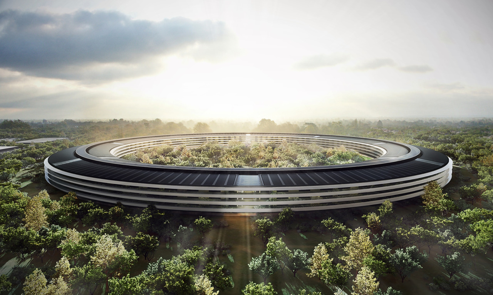

Think different.
미국 캘리포니아주 쿠퍼티노
애플 주식회사(영어: Apple Inc.)는 미국의 소프트웨어 및 컴퓨터 하드웨어를 개발, 제작하는 회사이다. 이전 명칭은 애플 컴퓨터 주식회사(영어: Apple Computer, Inc.)였다. 최초의 개인용 컴퓨터를 만든 회사이며, 최초로 키보드와 모니터를 가지고 있는 애플 I을 출시하였고, 애플 II는 공전의 히트작이 되어 개인용 컴퓨터의 시대를 열었다. 이후 매킨토시(Macintosh)로 마우스를 이용한 컴퓨터 조작과 같은 그래픽 사용자 인터페이스의 보급을 선도하였다. 현재 개인용 컴퓨터인 매킨토시, MP3 플레이어인 아이팟, 스마트폰인 아이폰, 가정용 멀티미디어 기기인 애플 TV, 태블릿 PC인 아이패드 등의 제품을 판매하고 있다. 그리고 아이팟에서 재생할 수 있는 음원을 인터넷을 통해 제공하는 아이튠즈 스토어와 OS X, 아이폰 사용자의 편의를 위한 인터넷 서스인 아이클라우드(iCloud)를 제공하고 있다. 또한 2014년 Apple Special Event에서 애플워치가 공개 되었다. 본사는 애플 캠퍼스에 두고 있으며, 미국 캘리포니아주 쿠퍼티노에 소재하고 있다. 최고경영자는 전 애플의 CEO였던 팀 쿡이다. 2011년 8월 9일 미국 증시에서 장 중 엑손모빌을 누르고 시가총액 1위가 되었고, 8월 10일에는 종가에서도 1위가 되었다. 2015년 2월 11일 세계 최초로 주식 종가 시가총액이 7000억 달러를 넘은 기업이 되었다. Canaccord Genuity에 따르면 2014년 1분기 기준 세계 스마트폰 수익의 65%를 차지하는 회사이다.